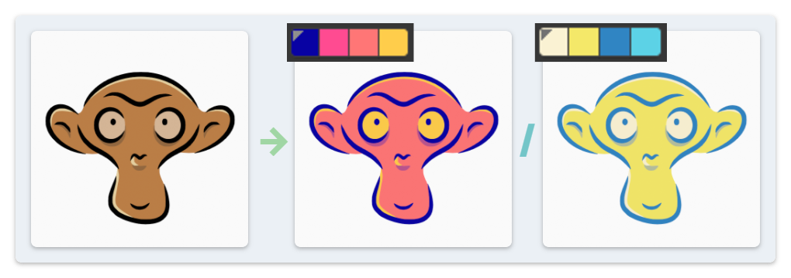

Palette Import #
Through the Import/Export sidebar panel, the user can import some palette/swatch files which contain color information. The add-on will convert them to Blender palettes. Currently, the following file formats are supported:
.acofiles used by Adobe Photoshop and Clip Studio Paint..swatchesfiles used by Procreate..xmlfiles used by some online color scheme services such as Adobe Color.- Text that contains hex color codes. Hex codes separated by either space or any symbol can be recognized, such as:
#FFEE93 #F5D782 #E97878 #9B5151ffee93f5d782e978789b5151f3c969,edff86,fff5b2,d4fcc3,362c28["f3c969","edff86","fff5b2","d4fcc3","362c28"]
Import Options #
- Tints and Shades: This option generates multiple variants of each color imported, by changing the brightness of imported color.
Clipboard Utility #
It is a common function for color scheme services to export XML or hex codes directly into the system clipboard. This add-on provides with a separate button in the same panel to parse the colors from the clipboard and import them into Blender with one click.
Recolor with a Palette #
The add-on also provides with a utility to quickly color the drawing using the imported palette. By clicking the Recolor button in the sidebar panel and selecting a palette, vertex colors of the selected strokes/points will be replaced with the palette colors, according to either RGB or HSV similarity.

Additional notes for some options:
- Normalize: Without normalization, each selected point will be recolored independently. On the contrary, this option enables taking the overall balance of all input points into account.
- Preserve Saturation/Brightness: These options allow the user to keep some color attributes unchanged when applying the new color to a stroke/point.